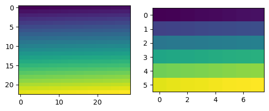

Binning
This example shows how LiberTEM can be used for fast binning of a large dataset.
[1]:
%matplotlib inline
[2]:
import numpy as np
import sparse
import matplotlib.pyplot as plt
from libertem.api import Context
from libertem.udf.masks import ApplyMasksUDF
[3]:
ctx = Context()
/home/weber/miniconda3/envs/libertem39/lib/python3.9/site-packages/distributed/node.py:182: UserWarning: Port 8787 is already in use.
Perhaps you already have a cluster running?
Hosting the HTTP server on port 33311 instead
warnings.warn(
2023-01-12 17:46:05,328 - distributed.diskutils - INFO - Found stale lock file and directory '/tmp/dask-worker-space-20335/worker-puok182k', purging
2023-01-12 17:46:05,329 - distributed.diskutils - INFO - Found stale lock file and directory '/tmp/dask-worker-space-20335/worker-aabyao71', purging
2023-01-12 17:46:05,329 - distributed.diskutils - INFO - Found stale lock file and directory '/tmp/dask-worker-space-20335/worker-2ka8wcft', purging
2023-01-12 17:46:05,329 - distributed.diskutils - INFO - Found stale lock file and directory '/tmp/dask-worker-space-20335/worker-jywv_h_e', purging
2023-01-12 17:46:05,329 - distributed.diskutils - INFO - Found stale lock file and directory '/tmp/dask-worker-space-20335/worker-pexwfimn', purging
2023-01-12 17:46:05,330 - distributed.diskutils - INFO - Found stale lock file and directory '/tmp/dask-worker-space-20335/worker-59tgcdqq', purging
2023-01-12 17:46:05,330 - distributed.diskutils - INFO - Found stale lock file and directory '/tmp/dask-worker-space-20335/worker-j015gndf', purging
2023-01-12 17:46:05,330 - distributed.diskutils - INFO - Found stale lock file and directory '/tmp/dask-worker-space-20335/worker-jsq_co7e', purging
2023-01-12 17:46:05,330 - distributed.diskutils - INFO - Found stale lock file and directory '/tmp/dask-worker-space-20335/worker-hfwa88fk', purging
2023-01-12 17:46:05,330 - distributed.diskutils - INFO - Found stale lock file and directory '/tmp/dask-worker-space-20335/worker-risvestd', purging
2023-01-12 17:46:05,331 - distributed.diskutils - INFO - Found stale lock file and directory '/tmp/dask-worker-space-20335/worker-243wjyf7', purging
2023-01-12 17:46:05,331 - distributed.diskutils - INFO - Found stale lock file and directory '/tmp/dask-worker-space-20335/worker-uqbzw2aj', purging
2023-01-12 17:46:05,331 - distributed.diskutils - INFO - Found stale lock file and directory '/tmp/dask-worker-space-20335/worker-e5y9xkg4', purging
2023-01-12 17:46:05,331 - distributed.diskutils - INFO - Found stale lock file and directory '/tmp/dask-worker-space-20335/worker-i0n5572i', purging
2023-01-12 17:46:05,332 - distributed.diskutils - INFO - Found stale lock file and directory '/tmp/dask-worker-space-20335/worker-ezz_dlzn', purging
2023-01-12 17:46:05,332 - distributed.diskutils - INFO - Found stale lock file and directory '/tmp/dask-worker-space-20335/worker-7t3fncwj', purging
2023-01-12 17:46:05,332 - distributed.diskutils - INFO - Found stale lock file and directory '/tmp/dask-worker-space-20335/worker-yz_7qeiy', purging
2023-01-12 17:46:05,332 - distributed.diskutils - INFO - Found stale lock file and directory '/tmp/dask-worker-space-20335/worker-tytmei57', purging
2023-01-12 17:46:05,333 - distributed.diskutils - INFO - Found stale lock file and directory '/tmp/dask-worker-space-20335/worker-ziyu5pcp', purging
2023-01-12 17:46:05,333 - distributed.diskutils - INFO - Found stale lock file and directory '/tmp/dask-worker-space-20335/worker-8ato0_wb', purging
2023-01-12 17:46:05,333 - distributed.diskutils - INFO - Found stale lock file and directory '/tmp/dask-worker-space-20335/worker-n7il75ba', purging
2023-01-12 17:46:05,333 - distributed.diskutils - INFO - Found stale lock file and directory '/tmp/dask-worker-space-20335/worker-gpdms9po', purging
2023-01-12 17:46:05,333 - distributed.diskutils - INFO - Found stale lock file and directory '/tmp/dask-worker-space-20335/worker-5lug78uh', purging
2023-01-12 17:46:05,334 - distributed.diskutils - INFO - Found stale lock file and directory '/tmp/dask-worker-space-20335/worker-_e62snqq', purging
2023-01-12 17:46:05,334 - distributed.diskutils - INFO - Found stale lock file and directory '/tmp/dask-worker-space-20335/worker-m80aei6a', purging
2023-01-12 17:46:05,334 - distributed.diskutils - INFO - Found stale lock file and directory '/tmp/dask-worker-space-20335/worker-kwvd977a', purging
2023-01-12 17:46:05,334 - distributed.preloading - INFO - Creating preload: from libertem.executor.dask import worker_setup; worker_setup(resource="CPU", device=10)
2023-01-12 17:46:05,335 - distributed.utils - INFO - Reload module tmpuxnxe5ye from .py file
2023-01-12 17:46:05,346 - distributed.preloading - INFO - Creating preload: from libertem.executor.dask import worker_setup; worker_setup(resource="CPU", device=3)
2023-01-12 17:46:05,346 - distributed.utils - INFO - Reload module tmpvq20t87c from .py file
2023-01-12 17:46:05,354 - distributed.preloading - INFO - Creating preload: from libertem.executor.dask import worker_setup; worker_setup(resource="CPU", device=14)
2023-01-12 17:46:05,354 - distributed.utils - INFO - Reload module tmpqkldlogs from .py file
2023-01-12 17:46:05,369 - distributed.preloading - INFO - Creating preload: from libertem.executor.dask import worker_setup; worker_setup(resource="CPU", device=13)
2023-01-12 17:46:05,370 - distributed.utils - INFO - Reload module tmpdnzwwr1z from .py file
2023-01-12 17:46:05,382 - distributed.preloading - INFO - Creating preload: from libertem.executor.dask import worker_setup; worker_setup(resource="CPU", device=9)
2023-01-12 17:46:05,382 - distributed.utils - INFO - Reload module tmpbuwh2reh from .py file
2023-01-12 17:46:05,392 - distributed.preloading - INFO - Creating preload: from libertem.executor.dask import worker_setup; worker_setup(resource="CPU", device=6)
2023-01-12 17:46:05,393 - distributed.utils - INFO - Reload module tmp_ir2g6re from .py file
2023-01-12 17:46:05,403 - distributed.preloading - INFO - Creating preload: from libertem.executor.dask import worker_setup; worker_setup(resource="CPU", device=15)
2023-01-12 17:46:05,403 - distributed.utils - INFO - Reload module tmpihz62_ke from .py file
2023-01-12 17:46:05,417 - distributed.preloading - INFO - Creating preload: from libertem.executor.dask import worker_setup; worker_setup(resource="CPU", device=23)
2023-01-12 17:46:05,417 - distributed.utils - INFO - Reload module tmpytb0guza from .py file
2023-01-12 17:46:05,429 - distributed.preloading - INFO - Creating preload: from libertem.executor.dask import worker_setup; worker_setup(resource="CPU", device=11)
2023-01-12 17:46:05,429 - distributed.utils - INFO - Reload module tmpoife_3ol from .py file
2023-01-12 17:46:05,487 - distributed.preloading - INFO - Creating preload: from libertem.executor.dask import worker_setup; worker_setup(resource="CPU", device=4)
2023-01-12 17:46:05,488 - distributed.utils - INFO - Reload module tmpmisbl4qs from .py file
2023-01-12 17:46:05,497 - distributed.preloading - INFO - Creating preload: from libertem.executor.dask import worker_setup; worker_setup(resource="CPU", device=0)
2023-01-12 17:46:05,498 - distributed.utils - INFO - Reload module tmpb2x08nyy from .py file
2023-01-12 17:46:05,508 - distributed.preloading - INFO - Creating preload: from libertem.executor.dask import worker_setup; worker_setup(resource="CPU", device=1)
2023-01-12 17:46:05,509 - distributed.utils - INFO - Reload module tmpkr60pqdc from .py file
2023-01-12 17:46:05,513 - distributed.preloading - INFO - Creating preload: from libertem.executor.dask import worker_setup; worker_setup(resource="CPU", device=21)
2023-01-12 17:46:05,514 - distributed.utils - INFO - Reload module tmpd0_y3dey from .py file
2023-01-12 17:46:05,533 - distributed.preloading - INFO - Creating preload: from libertem.executor.dask import worker_setup; worker_setup(resource="CPU", device=2)
2023-01-12 17:46:05,534 - distributed.utils - INFO - Reload module tmp5xho_d85 from .py file
2023-01-12 17:46:05,545 - distributed.preloading - INFO - Creating preload: from libertem.executor.dask import worker_setup; worker_setup(resource="CPU", device=22)
2023-01-12 17:46:05,546 - distributed.utils - INFO - Reload module tmp_g1o0i9j from .py file
2023-01-12 17:46:05,560 - distributed.preloading - INFO - Creating preload: from libertem.executor.dask import worker_setup; worker_setup(resource="CPU", device=7)
2023-01-12 17:46:05,561 - distributed.utils - INFO - Reload module tmp96889rkw from .py file
2023-01-12 17:46:05,569 - distributed.preloading - INFO - Creating preload: from libertem.executor.dask import worker_setup; worker_setup(resource="CPU", device=17)
2023-01-12 17:46:05,570 - distributed.utils - INFO - Reload module tmperpj6six from .py file
2023-01-12 17:46:05,578 - distributed.preloading - INFO - Creating preload: from libertem.executor.dask import worker_setup; worker_setup(resource="CPU", device=12)
2023-01-12 17:46:05,578 - distributed.utils - INFO - Reload module tmpmi6p4hd4 from .py file
2023-01-12 17:46:05,590 - distributed.preloading - INFO - Creating preload: from libertem.executor.dask import worker_setup; worker_setup(resource="CPU", device=8)
2023-01-12 17:46:05,591 - distributed.utils - INFO - Reload module tmptm7nqrea from .py file
2023-01-12 17:46:05,624 - distributed.preloading - INFO - Creating preload: from libertem.executor.dask import worker_setup; worker_setup(resource="CPU", device=18)
2023-01-12 17:46:05,625 - distributed.utils - INFO - Reload module tmphal63ifm from .py file
2023-01-12 17:46:05,635 - distributed.preloading - INFO - Creating preload: from libertem.executor.dask import worker_setup; worker_setup(resource="CPU", device=16)
2023-01-12 17:46:05,635 - distributed.utils - INFO - Reload module tmp51es4m7y from .py file
2023-01-12 17:46:05,638 - distributed.preloading - INFO - Creating preload: from libertem.executor.dask import worker_setup; worker_setup(resource="CPU", device=5)
2023-01-12 17:46:05,638 - distributed.utils - INFO - Reload module tmpm6jjgc2g from .py file
2023-01-12 17:46:05,654 - distributed.preloading - INFO - Creating preload: from libertem.executor.dask import worker_setup; worker_setup(resource="CUDA", device=0)
2023-01-12 17:46:05,654 - distributed.utils - INFO - Reload module tmp7dxik48v from .py file
2023-01-12 17:46:05,668 - distributed.preloading - INFO - Creating preload: from libertem.common.tracing import maybe_setup_tracing; maybe_setup_tracing(service_name='default-service-0', service_id='0')
2023-01-12 17:46:05,668 - distributed.utils - INFO - Reload module tmpdflrcfx7 from .py file
2023-01-12 17:46:05,684 - distributed.preloading - INFO - Creating preload: from libertem.executor.dask import worker_setup; worker_setup(resource="CPU", device=19)
2023-01-12 17:46:05,684 - distributed.utils - INFO - Reload module tmpviy6cifk from .py file
2023-01-12 17:46:05,695 - distributed.preloading - INFO - Creating preload: from libertem.executor.dask import worker_setup; worker_setup(resource="CPU", device=20)
2023-01-12 17:46:05,695 - distributed.utils - INFO - Reload module tmp2m9aqbmc from .py file
2023-01-12 17:46:05,702 - distributed.preloading - INFO - Import preload module: /tmp/tmpvq20t87c.py
2023-01-12 17:46:05,702 - distributed.preloading - INFO - Creating preload: from libertem.common.tracing import maybe_setup_tracing; maybe_setup_tracing(service_name='default-cpu-3', service_id='3')
2023-01-12 17:46:05,703 - distributed.utils - INFO - Reload module tmpldv3o8uz from .py file
2023-01-12 17:46:05,703 - distributed.preloading - INFO - Import preload module: /tmp/tmpldv3o8uz.py
2023-01-12 17:46:05,703 - distributed.preloading - INFO - Creating preload: libertem.preload
2023-01-12 17:46:05,711 - distributed.preloading - INFO - Import preload module: /tmp/tmpbuwh2reh.py
2023-01-12 17:46:05,711 - distributed.preloading - INFO - Creating preload: from libertem.common.tracing import maybe_setup_tracing; maybe_setup_tracing(service_name='default-cpu-9', service_id='9')
2023-01-12 17:46:05,711 - distributed.utils - INFO - Reload module tmprcnfndre from .py file
2023-01-12 17:46:05,711 - distributed.preloading - INFO - Import preload module: /tmp/tmprcnfndre.py
2023-01-12 17:46:05,711 - distributed.preloading - INFO - Creating preload: libertem.preload
2023-01-12 17:46:05,726 - distributed.preloading - INFO - Import preload module: /tmp/tmpihz62_ke.py
2023-01-12 17:46:05,727 - distributed.preloading - INFO - Creating preload: from libertem.common.tracing import maybe_setup_tracing; maybe_setup_tracing(service_name='default-cpu-15', service_id='15')
2023-01-12 17:46:05,727 - distributed.utils - INFO - Reload module tmpxb4v9o9k from .py file
2023-01-12 17:46:05,727 - distributed.preloading - INFO - Import preload module: /tmp/tmpxb4v9o9k.py
2023-01-12 17:46:05,728 - distributed.preloading - INFO - Creating preload: libertem.preload
2023-01-12 17:46:05,740 - distributed.preloading - INFO - Import preload module: /tmp/tmpoife_3ol.py
2023-01-12 17:46:05,740 - distributed.preloading - INFO - Creating preload: from libertem.common.tracing import maybe_setup_tracing; maybe_setup_tracing(service_name='default-cpu-11', service_id='11')
2023-01-12 17:46:05,741 - distributed.utils - INFO - Reload module tmpfveh_50p from .py file
2023-01-12 17:46:05,741 - distributed.preloading - INFO - Import preload module: /tmp/tmpfveh_50p.py
2023-01-12 17:46:05,741 - distributed.preloading - INFO - Creating preload: libertem.preload
2023-01-12 17:46:05,751 - distributed.preloading - INFO - Import preload module: libertem.preload
2023-01-12 17:46:05,752 - distributed.preloading - INFO - Import preload module: /tmp/tmp_ir2g6re.py
2023-01-12 17:46:05,752 - distributed.preloading - INFO - Creating preload: from libertem.common.tracing import maybe_setup_tracing; maybe_setup_tracing(service_name='default-cpu-6', service_id='6')
2023-01-12 17:46:05,753 - distributed.utils - INFO - Reload module tmpu3u5hxmx from .py file
2023-01-12 17:46:05,753 - distributed.preloading - INFO - Import preload module: /tmp/tmpu3u5hxmx.py
2023-01-12 17:46:05,753 - distributed.preloading - INFO - Creating preload: libertem.preload
2023-01-12 17:46:05,758 - distributed.preloading - INFO - Import preload module: libertem.preload
2023-01-12 17:46:05,774 - distributed.preloading - INFO - Import preload module: /tmp/tmpuxnxe5ye.py
2023-01-12 17:46:05,774 - distributed.preloading - INFO - Creating preload: from libertem.common.tracing import maybe_setup_tracing; maybe_setup_tracing(service_name='default-cpu-10', service_id='10')
2023-01-12 17:46:05,775 - distributed.utils - INFO - Reload module tmpvauiztwl from .py file
2023-01-12 17:46:05,775 - distributed.preloading - INFO - Import preload module: /tmp/tmpvauiztwl.py
2023-01-12 17:46:05,775 - distributed.preloading - INFO - Creating preload: libertem.preload
2023-01-12 17:46:05,777 - distributed.preloading - INFO - Import preload module: libertem.preload
2023-01-12 17:46:05,788 - distributed.preloading - INFO - Import preload module: libertem.preload
2023-01-12 17:46:05,795 - distributed.preloading - INFO - Import preload module: /tmp/tmpdnzwwr1z.py
2023-01-12 17:46:05,795 - distributed.preloading - INFO - Creating preload: from libertem.common.tracing import maybe_setup_tracing; maybe_setup_tracing(service_name='default-cpu-13', service_id='13')
2023-01-12 17:46:05,796 - distributed.utils - INFO - Reload module tmpgjceznef from .py file
2023-01-12 17:46:05,796 - distributed.preloading - INFO - Import preload module: /tmp/tmpgjceznef.py
2023-01-12 17:46:05,796 - distributed.preloading - INFO - Creating preload: libertem.preload
2023-01-12 17:46:05,798 - distributed.preloading - INFO - Import preload module: /tmp/tmpqkldlogs.py
2023-01-12 17:46:05,799 - distributed.preloading - INFO - Creating preload: from libertem.common.tracing import maybe_setup_tracing; maybe_setup_tracing(service_name='default-cpu-14', service_id='14')
2023-01-12 17:46:05,799 - distributed.utils - INFO - Reload module tmp_10g0lb9 from .py file
2023-01-12 17:46:05,799 - distributed.preloading - INFO - Import preload module: libertem.preload
2023-01-12 17:46:05,800 - distributed.preloading - INFO - Import preload module: /tmp/tmp_10g0lb9.py
2023-01-12 17:46:05,800 - distributed.preloading - INFO - Creating preload: libertem.preload
2023-01-12 17:46:05,823 - distributed.preloading - INFO - Import preload module: /tmp/tmpd0_y3dey.py
2023-01-12 17:46:05,823 - distributed.preloading - INFO - Creating preload: from libertem.common.tracing import maybe_setup_tracing; maybe_setup_tracing(service_name='default-cpu-21', service_id='21')
2023-01-12 17:46:05,824 - distributed.utils - INFO - Reload module tmpkybfwbvj from .py file
2023-01-12 17:46:05,824 - distributed.preloading - INFO - Import preload module: libertem.preload
2023-01-12 17:46:05,824 - distributed.preloading - INFO - Import preload module: /tmp/tmpkybfwbvj.py
2023-01-12 17:46:05,824 - distributed.preloading - INFO - Creating preload: libertem.preload
2023-01-12 17:46:05,833 - distributed.preloading - INFO - Import preload module: /tmp/tmpb2x08nyy.py
2023-01-12 17:46:05,834 - distributed.preloading - INFO - Creating preload: from libertem.common.tracing import maybe_setup_tracing; maybe_setup_tracing(service_name='default-cpu-0', service_id='0')
2023-01-12 17:46:05,834 - distributed.utils - INFO - Reload module tmp3gswzo_c from .py file
2023-01-12 17:46:05,835 - distributed.preloading - INFO - Import preload module: /tmp/tmp3gswzo_c.py
2023-01-12 17:46:05,835 - distributed.preloading - INFO - Creating preload: libertem.preload
2023-01-12 17:46:05,838 - distributed.preloading - INFO - Import preload module: /tmp/tmp5xho_d85.py
2023-01-12 17:46:05,838 - distributed.preloading - INFO - Creating preload: from libertem.common.tracing import maybe_setup_tracing; maybe_setup_tracing(service_name='default-cpu-2', service_id='2')
2023-01-12 17:46:05,838 - distributed.utils - INFO - Reload module tmp9gf7ci5j from .py file
2023-01-12 17:46:05,839 - distributed.preloading - INFO - Import preload module: /tmp/tmp9gf7ci5j.py
2023-01-12 17:46:05,839 - distributed.preloading - INFO - Creating preload: libertem.preload
2023-01-12 17:46:05,842 - distributed.preloading - INFO - Import preload module: /tmp/tmpytb0guza.py
2023-01-12 17:46:05,842 - distributed.preloading - INFO - Creating preload: from libertem.common.tracing import maybe_setup_tracing; maybe_setup_tracing(service_name='default-cpu-23', service_id='23')
2023-01-12 17:46:05,843 - distributed.utils - INFO - Reload module tmp1jg1317i from .py file
2023-01-12 17:46:05,843 - distributed.preloading - INFO - Import preload module: /tmp/tmp1jg1317i.py
2023-01-12 17:46:05,843 - distributed.preloading - INFO - Creating preload: libertem.preload
2023-01-12 17:46:05,846 - distributed.preloading - INFO - Import preload module: /tmp/tmpmisbl4qs.py
2023-01-12 17:46:05,846 - distributed.preloading - INFO - Creating preload: from libertem.common.tracing import maybe_setup_tracing; maybe_setup_tracing(service_name='default-cpu-4', service_id='4')
2023-01-12 17:46:05,846 - distributed.utils - INFO - Reload module tmps7r31uyx from .py file
2023-01-12 17:46:05,846 - distributed.preloading - INFO - Import preload module: /tmp/tmps7r31uyx.py
2023-01-12 17:46:05,847 - distributed.preloading - INFO - Creating preload: libertem.preload
2023-01-12 17:46:05,848 - distributed.preloading - INFO - Import preload module: libertem.preload
2023-01-12 17:46:05,861 - distributed.preloading - INFO - Import preload module: libertem.preload
2023-01-12 17:46:05,872 - distributed.preloading - INFO - Import preload module: /tmp/tmp96889rkw.py
2023-01-12 17:46:05,872 - distributed.preloading - INFO - Creating preload: from libertem.common.tracing import maybe_setup_tracing; maybe_setup_tracing(service_name='default-cpu-7', service_id='7')
2023-01-12 17:46:05,873 - distributed.utils - INFO - Reload module tmpk5bfxky5 from .py file
2023-01-12 17:46:05,873 - distributed.preloading - INFO - Import preload module: libertem.preload
2023-01-12 17:46:05,873 - distributed.preloading - INFO - Import preload module: /tmp/tmpk5bfxky5.py
2023-01-12 17:46:05,873 - distributed.preloading - INFO - Creating preload: libertem.preload
2023-01-12 17:46:05,882 - distributed.preloading - INFO - Import preload module: libertem.preload
2023-01-12 17:46:05,885 - distributed.preloading - INFO - Import preload module: /tmp/tmp_g1o0i9j.py
2023-01-12 17:46:05,886 - distributed.preloading - INFO - Creating preload: from libertem.common.tracing import maybe_setup_tracing; maybe_setup_tracing(service_name='default-cpu-22', service_id='22')
2023-01-12 17:46:05,886 - distributed.utils - INFO - Reload module tmped1jm29u from .py file
2023-01-12 17:46:05,886 - distributed.preloading - INFO - Import preload module: /tmp/tmped1jm29u.py
2023-01-12 17:46:05,886 - distributed.preloading - INFO - Creating preload: libertem.preload
2023-01-12 17:46:05,888 - distributed.preloading - INFO - Import preload module: libertem.preload
2023-01-12 17:46:05,889 - distributed.preloading - INFO - Import preload module: /tmp/tmpmi6p4hd4.py
2023-01-12 17:46:05,889 - distributed.preloading - INFO - Creating preload: from libertem.common.tracing import maybe_setup_tracing; maybe_setup_tracing(service_name='default-cpu-12', service_id='12')
2023-01-12 17:46:05,890 - distributed.utils - INFO - Reload module tmpcaujv2ru from .py file
2023-01-12 17:46:05,890 - distributed.preloading - INFO - Import preload module: /tmp/tmpcaujv2ru.py
2023-01-12 17:46:05,890 - distributed.preloading - INFO - Creating preload: libertem.preload
2023-01-12 17:46:05,891 - distributed.preloading - INFO - Import preload module: libertem.preload
2023-01-12 17:46:05,893 - distributed.preloading - INFO - Import preload module: libertem.preload
2023-01-12 17:46:05,902 - distributed.preloading - INFO - Import preload module: /tmp/tmperpj6six.py
2023-01-12 17:46:05,903 - distributed.preloading - INFO - Creating preload: from libertem.common.tracing import maybe_setup_tracing; maybe_setup_tracing(service_name='default-cpu-17', service_id='17')
2023-01-12 17:46:05,903 - distributed.utils - INFO - Reload module tmp1vkqo7xe from .py file
2023-01-12 17:46:05,904 - distributed.preloading - INFO - Import preload module: /tmp/tmp1vkqo7xe.py
2023-01-12 17:46:05,904 - distributed.preloading - INFO - Creating preload: libertem.preload
2023-01-12 17:46:05,907 - distributed.preloading - INFO - Import preload module: /tmp/tmpkr60pqdc.py
2023-01-12 17:46:05,907 - distributed.preloading - INFO - Creating preload: from libertem.common.tracing import maybe_setup_tracing; maybe_setup_tracing(service_name='default-cpu-1', service_id='1')
2023-01-12 17:46:05,908 - distributed.utils - INFO - Reload module tmpsj9s8a10 from .py file
2023-01-12 17:46:05,908 - distributed.preloading - INFO - Import preload module: /tmp/tmpsj9s8a10.py
2023-01-12 17:46:05,908 - distributed.preloading - INFO - Creating preload: libertem.preload
2023-01-12 17:46:05,916 - distributed.preloading - INFO - Import preload module: /tmp/tmpdflrcfx7.py
2023-01-12 17:46:05,916 - distributed.preloading - INFO - Creating preload: libertem.preload
2023-01-12 17:46:05,922 - distributed.preloading - INFO - Import preload module: libertem.preload
2023-01-12 17:46:05,927 - distributed.preloading - INFO - Import preload module: /tmp/tmptm7nqrea.py
2023-01-12 17:46:05,927 - distributed.preloading - INFO - Creating preload: from libertem.common.tracing import maybe_setup_tracing; maybe_setup_tracing(service_name='default-cpu-8', service_id='8')
2023-01-12 17:46:05,927 - distributed.utils - INFO - Reload module tmpbvt5qpp4 from .py file
2023-01-12 17:46:05,927 - distributed.preloading - INFO - Import preload module: /tmp/tmpbvt5qpp4.py
2023-01-12 17:46:05,928 - distributed.preloading - INFO - Creating preload: libertem.preload
2023-01-12 17:46:05,937 - distributed.preloading - INFO - Import preload module: libertem.preload
2023-01-12 17:46:05,937 - distributed.preloading - INFO - Import preload module: libertem.preload
2023-01-12 17:46:05,951 - distributed.preloading - INFO - Import preload module: /tmp/tmpm6jjgc2g.py
2023-01-12 17:46:05,951 - distributed.preloading - INFO - Creating preload: from libertem.common.tracing import maybe_setup_tracing; maybe_setup_tracing(service_name='default-cpu-5', service_id='5')
2023-01-12 17:46:05,951 - distributed.utils - INFO - Reload module tmpwrkxfs_9 from .py file
2023-01-12 17:46:05,952 - distributed.preloading - INFO - Import preload module: /tmp/tmpwrkxfs_9.py
2023-01-12 17:46:05,952 - distributed.preloading - INFO - Creating preload: libertem.preload
2023-01-12 17:46:05,952 - distributed.preloading - INFO - Import preload module: /tmp/tmphal63ifm.py
2023-01-12 17:46:05,952 - distributed.preloading - INFO - Creating preload: from libertem.common.tracing import maybe_setup_tracing; maybe_setup_tracing(service_name='default-cpu-18', service_id='18')
2023-01-12 17:46:05,952 - distributed.utils - INFO - Reload module tmpev6kwut7 from .py file
2023-01-12 17:46:05,953 - distributed.preloading - INFO - Import preload module: /tmp/tmpev6kwut7.py
2023-01-12 17:46:05,953 - distributed.preloading - INFO - Creating preload: libertem.preload
2023-01-12 17:46:05,963 - distributed.preloading - INFO - Import preload module: libertem.preload
2023-01-12 17:46:05,969 - distributed.preloading - INFO - Import preload module: libertem.preload
2023-01-12 17:46:05,972 - distributed.preloading - INFO - Import preload module: /tmp/tmp51es4m7y.py
2023-01-12 17:46:05,972 - distributed.preloading - INFO - Creating preload: from libertem.common.tracing import maybe_setup_tracing; maybe_setup_tracing(service_name='default-cpu-16', service_id='16')
2023-01-12 17:46:05,972 - distributed.utils - INFO - Reload module tmpwxktz161 from .py file
2023-01-12 17:46:05,973 - distributed.preloading - INFO - Import preload module: /tmp/tmpwxktz161.py
2023-01-12 17:46:05,973 - distributed.preloading - INFO - Creating preload: libertem.preload
2023-01-12 17:46:05,975 - distributed.preloading - INFO - Import preload module: libertem.preload
2023-01-12 17:46:05,978 - distributed.preloading - INFO - Import preload module: libertem.preload
2023-01-12 17:46:05,998 - distributed.preloading - INFO - Import preload module: libertem.preload
2023-01-12 17:46:05,999 - distributed.preloading - INFO - Import preload module: libertem.preload
2023-01-12 17:46:06,004 - distributed.preloading - INFO - Import preload module: /tmp/tmpviy6cifk.py
2023-01-12 17:46:06,004 - distributed.preloading - INFO - Creating preload: from libertem.common.tracing import maybe_setup_tracing; maybe_setup_tracing(service_name='default-cpu-19', service_id='19')
2023-01-12 17:46:06,005 - distributed.utils - INFO - Reload module tmp3palcnaf from .py file
2023-01-12 17:46:06,005 - distributed.preloading - INFO - Import preload module: /tmp/tmp3palcnaf.py
2023-01-12 17:46:06,005 - distributed.preloading - INFO - Creating preload: libertem.preload
2023-01-12 17:46:06,009 - distributed.preloading - INFO - Import preload module: /tmp/tmp2m9aqbmc.py
2023-01-12 17:46:06,009 - distributed.preloading - INFO - Creating preload: from libertem.common.tracing import maybe_setup_tracing; maybe_setup_tracing(service_name='default-cpu-20', service_id='20')
2023-01-12 17:46:06,010 - distributed.utils - INFO - Reload module tmpp262uu1b from .py file
2023-01-12 17:46:06,010 - distributed.preloading - INFO - Import preload module: /tmp/tmpp262uu1b.py
2023-01-12 17:46:06,010 - distributed.preloading - INFO - Creating preload: libertem.preload
2023-01-12 17:46:06,017 - distributed.preloading - INFO - Import preload module: libertem.preload
2023-01-12 17:46:06,050 - distributed.preloading - INFO - Import preload module: libertem.preload
2023-01-12 17:46:06,056 - distributed.preloading - INFO - Import preload module: libertem.preload
2023-01-12 17:46:06,082 - distributed.preloading - INFO - Import preload module: /tmp/tmp7dxik48v.py
2023-01-12 17:46:06,083 - distributed.preloading - INFO - Creating preload: from libertem.common.tracing import maybe_setup_tracing; maybe_setup_tracing(service_name='default-cuda-0', service_id='0')
2023-01-12 17:46:06,083 - distributed.utils - INFO - Reload module tmp4vr8ur2u from .py file
2023-01-12 17:46:06,083 - distributed.preloading - INFO - Import preload module: /tmp/tmp4vr8ur2u.py
2023-01-12 17:46:06,083 - distributed.preloading - INFO - Creating preload: libertem.preload
2023-01-12 17:46:06,128 - distributed.preloading - INFO - Import preload module: libertem.preload
Generate test data
Just a folded linear gradient for illustration
[4]:
shape = (17, 19, 23, 29)
data = np.linspace(0, 1, np.prod(shape, dtype=np.int64)).reshape(shape)
[5]:
ds = ctx.load('memory', data=data)
Define the binning factor and determine target shape
[6]:
bin_factor = 4
[7]:
# ceil() to include output bins that only fit partially into the
# source frame
size_y = int(np.ceil(ds.shape.sig[0] / bin_factor))
size_x = int(np.ceil(ds.shape.sig[1] / bin_factor))
Create a sparse matrix for binning
Each layer corresponds to an output bin. We calculate which pixels are in each output bin.
[8]:
bin_matrix_layers = []
for y in range(size_y):
for x in range(size_x):
layer = np.zeros(ds.shape.sig)
start_y = y * bin_factor
stop_y = (y + 1) * bin_factor
start_x = x * bin_factor
stop_x = (x + 1) * bin_factor
layer[start_y:stop_y, start_x:stop_x] = 1
layer /= np.sum(layer)
bin_matrix_layers.append(sparse.COO(layer))
bin_matrix = sparse.stack(bin_matrix_layers)
[9]:
def mask_factory():
return bin_matrix
Apply the matrix
[10]:
udf = ApplyMasksUDF(mask_factories=mask_factory)
result = ctx.run_udf(dataset=ds, udf=udf, progress=True)
/home/weber/miniconda3/envs/libertem39/lib/python3.9/site-packages/distributed/worker.py:2988: UserWarning: Large object of size 1.65 MiB detected in task graph:
(<UDFTask [<class 'libertem.udf.masks.ApplyMasksUD ... -cf73ad3e178c')
Consider scattering large objects ahead of time
with client.scatter to reduce scheduler burden and
keep data on workers
future = client.submit(func, big_data) # bad
big_future = client.scatter(big_data) # good
future = client.submit(func, big_future) # good
warnings.warn(
Reshape and show result
[11]:
reshaped_result = result['intensity'].raw_data.reshape(*ds.shape.nav, size_y, size_x)
[12]:
fig, axes = plt.subplots(1, 2)
axes[0].imshow(data[0, 0])
axes[1].imshow(reshaped_result[0, 0])
[12]:
<matplotlib.image.AxesImage at 0x7fd5d874f3d0>

[ ]: